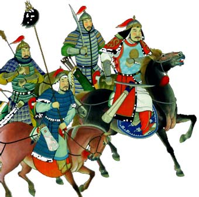
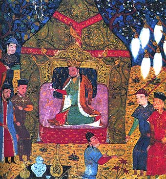

Quien estaba llamado a forjar el más vasto imperio que ha conocido la humanidad nació en las desoladas estepas de Mongolia, allí donde el frío y el viento hacen a los hombres duros como el diamante, insensibles como las piedras y tenaces como la hierba áspera que crece bajo la nieve helada. El pueblo mongol era uno de los pueblos nómadas más pequeños que vagaban con sus rebaños por los confines del desierto de Gobi, en busca de pastos. Cada uno tenía su propio kan o príncipe, encargado de cuidar que en su territorio reinase un cierto orden.
Rey de los mongoles

Corría el año 1196, y entre los mongoles corrió la voz de que había llegado el momento de elegir un nuevo rey de los mongoles entre los jefes de los campamentos. Cuando el chamán declaró que el Eterno Cielo Azul había destinado a Temujin para tal cargo nadie se opuso, y la elección del nuevo kan, que entonces contaba con veintiocho años de edad, fue celebrada con gran esplendor. Temujin se preocupó ante todo de fortalecer su propia tribu, de constituir un verdadero ejército y también de estar informado de cuanto acaecía en sus tribus vasallas.
Emperador universal

En el 1206, Año de la Pantera, cuando ya todas las tribus de la Alta Mongolia estaban bajo su dominio, Temujin se hizo nombrar Gran Kan, o emperador de emperadores, con el hombre de Gengis. En el curso de una importante asamblea de jefes, Temujin expuso su idea de que el interés general exigía nombrar un kan supremo, capaz de reunir toda la fuerza nómada y lanzarla a la conquista de ciudades fabulosas, de llanuras salpicadas de prósperas casas de labranza y de puertos riquísimos donde atracaban los navíos extranjeros. Ante la enumeración de estas posibilidades, los mongoles se estremecieron de codicia. ¿Quién podía ser ese caudillo de caudillos? El nombre de Temujin, que ya había sido aclamado jefe de una importante confederación de tribus y era a la vez respetado y temido, voló de boca en boca. Oponerse a su idea podía ser peligroso, y apoyarla no era sino consagrar un estado de cosas y quizás conseguir grandes botines.